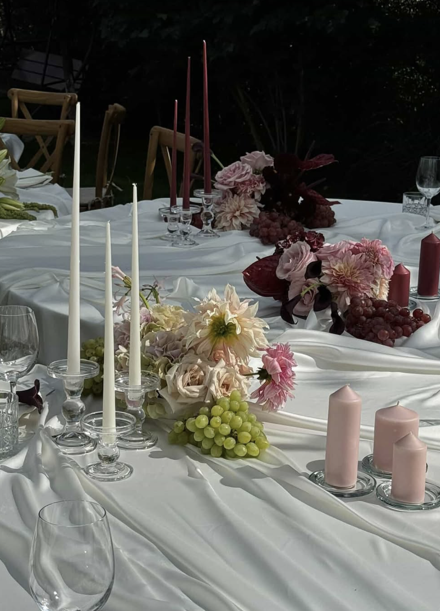
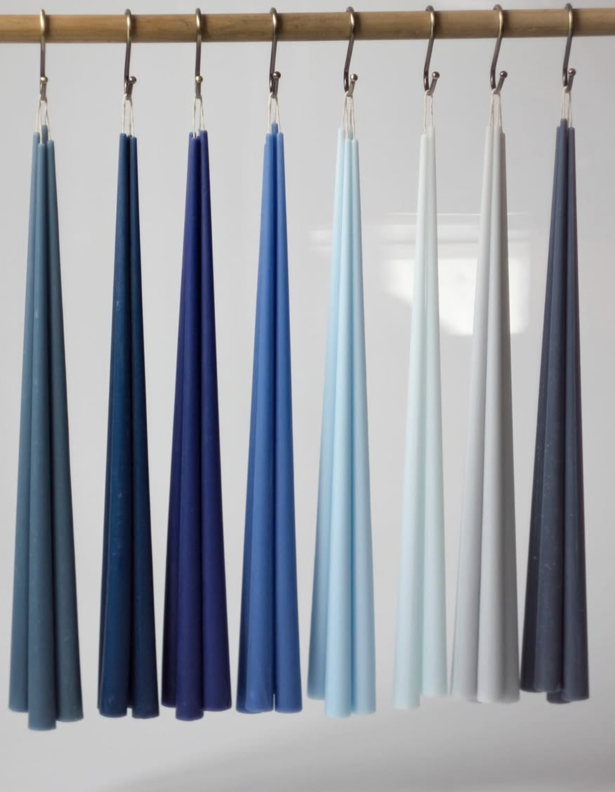
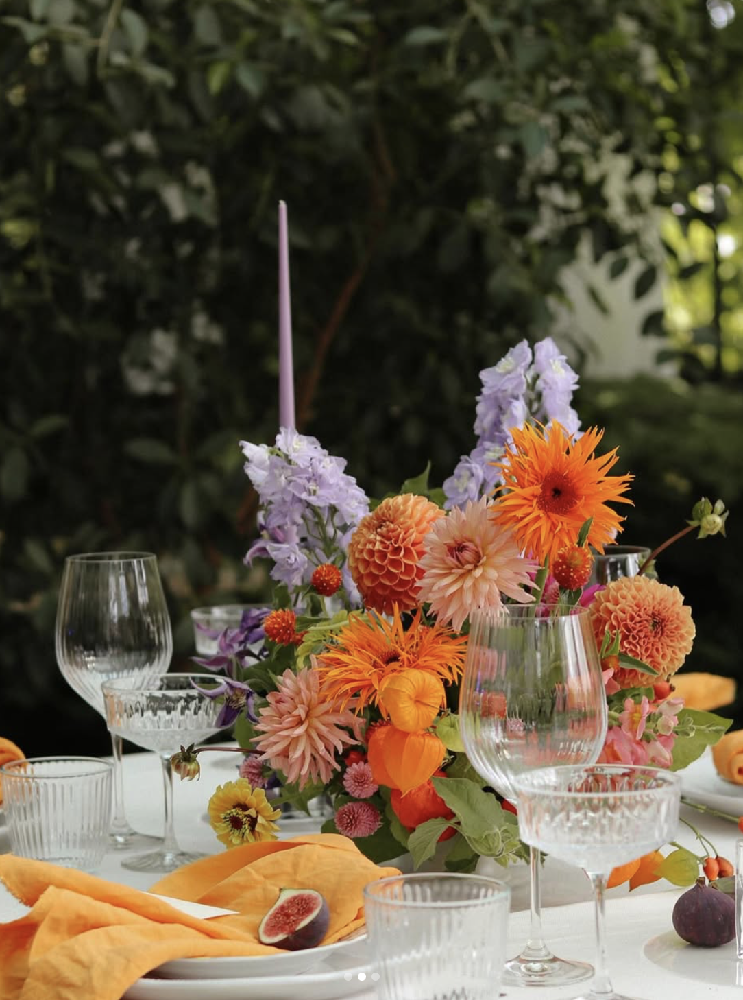
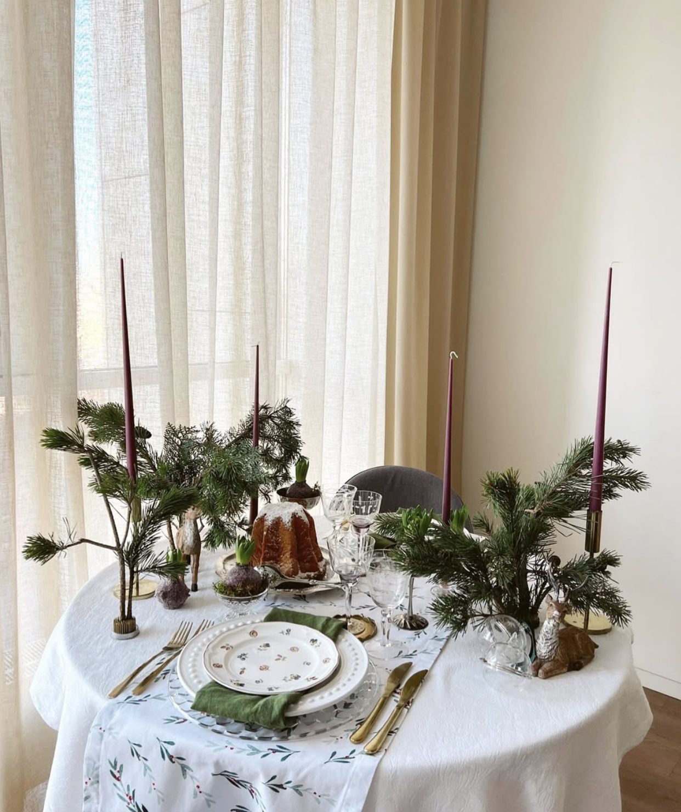
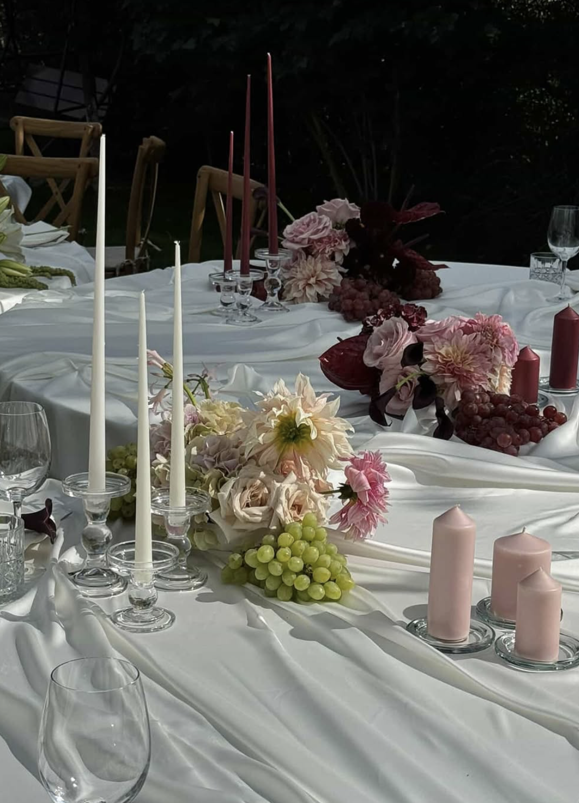
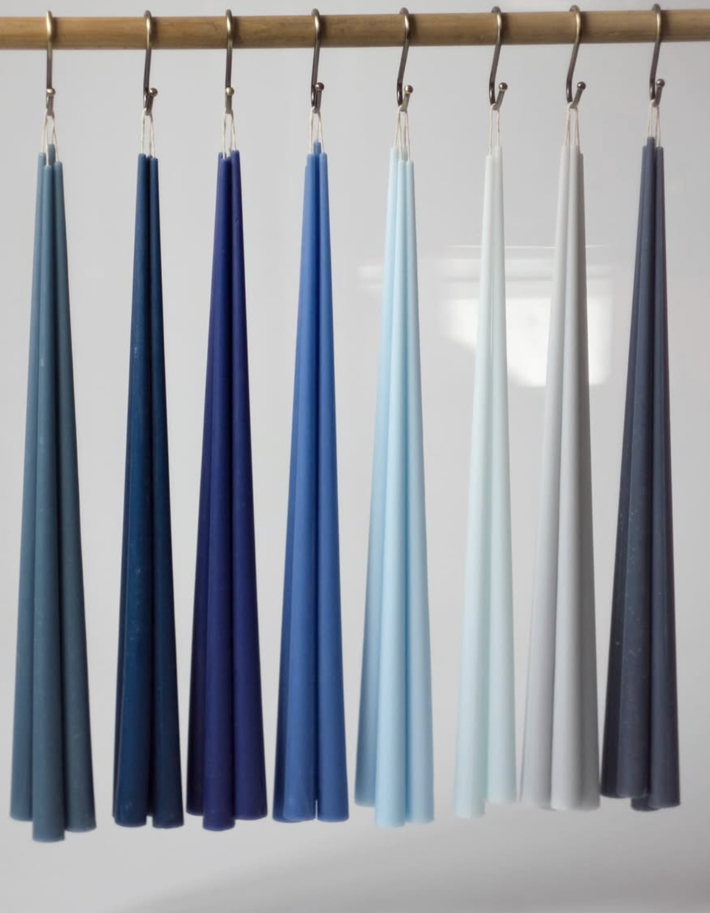
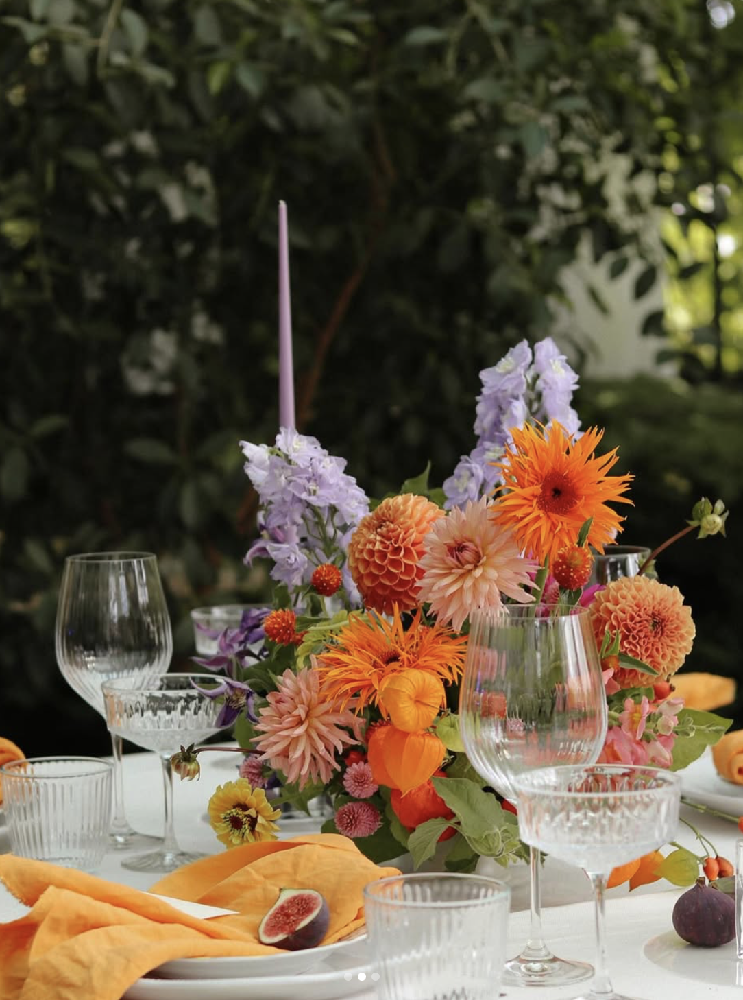
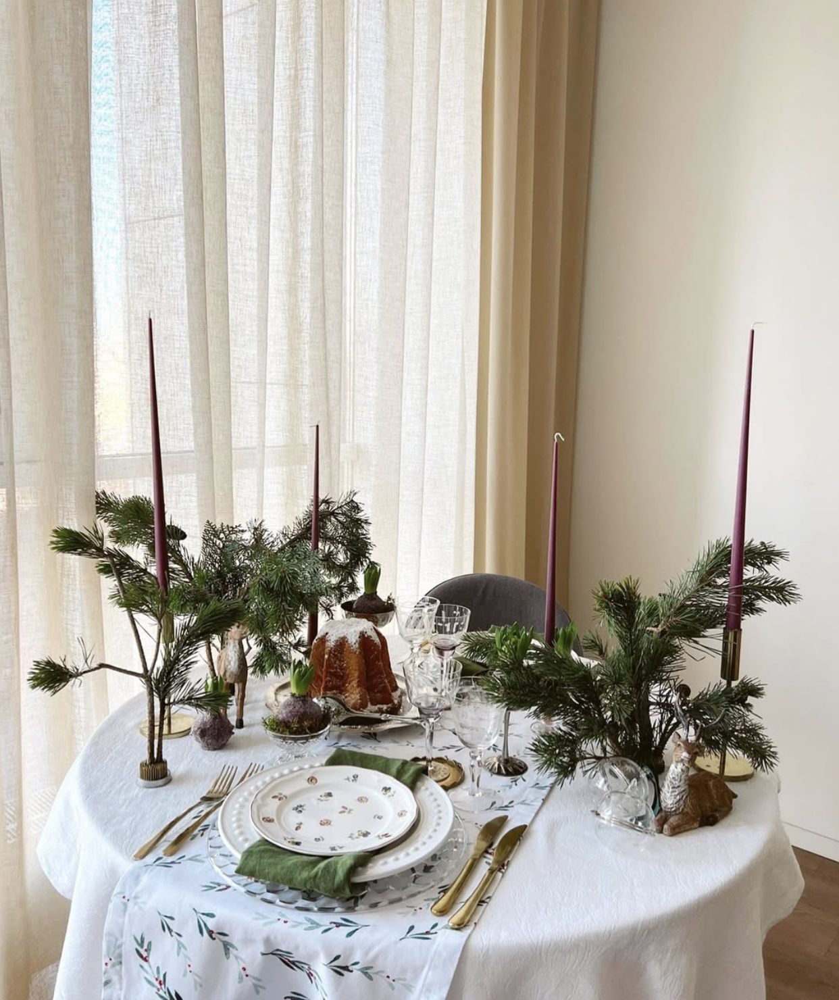

BB Candles - Handmade Elegance
Our handmade BB candles are crafted from a blend of paraffin and soy wax. The elegant cone shape makes them perfect for table settings, home décor, special occasions, and weddings.
Available in any color, from the softest pastels to the richest dark tones, our candles bring a touch of sophistication to any setting.
Product Features
- Made from 100% purified food-grade paraffin and plant-based wax
- Cotton wick for a clean burn
- Eco-friendly dyes
- Over 50 shades available
- Custom color matching using the Pantone chart
- Height: 45 cm | Base diameter: 2.2 cm
- Burn time:6-8 hours
- Perfect conical shape
Storage Tips
Store candles at temperatures between 0°C and 20°C in a cool, dark place. Keep them in a box, horizontally or vertically, away from heat sources. Avoid direct sunlight to prevent changes in color or shape.
Usage Recommendations
- Always place the candle in a candle holder before lighting. Trim the wick to a maximum of 0.5 cm.
- Ensure the candle is upright on a stable surface.
- Keep candles at least 7- 10 cm apart.
- Never leave a burning candle unattended.
- Keep out of reach of children and pets.